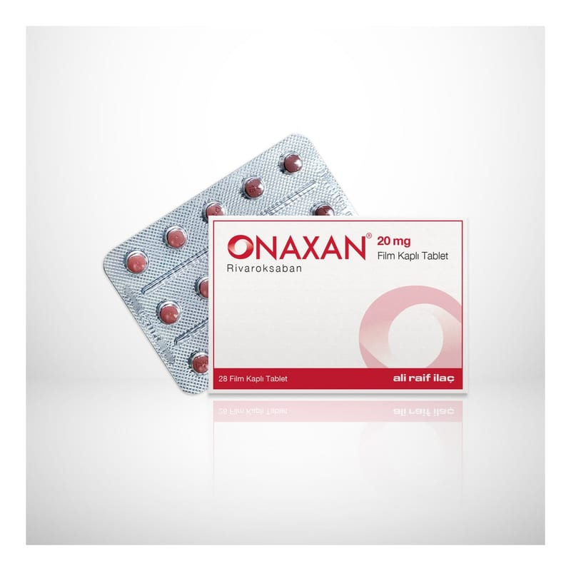

Onaxan 20 mg Film Kaplı Tablet, 28 Adet

Ne için kullanılır
KT · Bölüm 1• ONAXAN®film kaplı tabletlerin her biri 20 mg rivaroksaban içermektedir. Rivaroksaban antitrombotik ajanlar olarak adlandırılan bir ilaç grubuna dahildir ve etkisini kanın pıhtılaşmasında rol oynayan faktör Xa’yı engelleyerek ve böylece kanın pıhtı oluşturma eğilimini azaltarak gösterir. Bu ilacı kullanmaya başlamadan önce bu KULLANMA TALİMATINI dikkatlice okuyunuz, çünkü sizin için önemli bilgiler içermektedir. • Bu kullanma talimatını saklayınız. Daha sonra tekrar okumaya ihtiyaç duyabilirsiniz. • Eğer ilave sorularınız olursa, lütfen doktorunuza veya eczacınıza danışınız. • Bu ilaç kişisel olarak sizin için reçete edilmiştir, başkalarına vermeyiniz. • Bu ilacın kullanımı sırasında, doktora veya hastaneye gittiğinizde doktorunuza bu ilacı kullandığınızı söyleyiniz. • Bu talimatta yazılanlara aynen uyunuz. İlaç hakkında size/çocuğunuza önerilen dozun dışında yüksek veya düşük doz kullanmayınız.
• ONAXAN®28 tabletlik ambalajlarda sunulmaktadır. Ambalajın içindeki tabletler kahverengi kırmızı renkli, bir yüzü üçgen ve 20 baskılı, yuvarlak bikonveks film kaplı tabletlerdir. • ONAXAN®yetişkin hastalarda aşağıdaki durumlarda kullanılmaktadır: - Bir tür kalp ritim bozukluğunda (non-valvülar atriyal fibrilasyon), inmenin veya vücudun diğer damarlarındaki kan pıhtısının önlenmesinde, - Bacak damarlarındaki kan pıhtısının (derin ven trombozu) tedavisi ve akciğer damarlarında kan pıhtısının (pulmoner emboli) tedavisi ve bacak damarlarında ve akciğer damarlarında kan pıhtısının (pulmoner emboli) tekrar oluşmasının önlenmesinde.